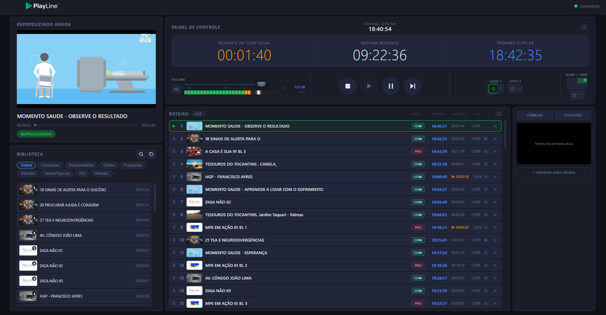

Um sistema projetado para emissoras que precisam de transmissão contínua sem depender de licenças comerciais ou de equipe técnica especializada.
O PlayLine é um sistema de automação de playout televisivo que organiza, reproduz e gerencia a programação da sua emissora de forma contínua e automatizada. Ele foi desenvolvido para emissoras que não podem arcar com soluções comerciais de alto custo e não dispõem de equipe técnica dedicada, sem perder as funcionalidades essenciais. Ao viabilizar a operação contínua dessas emissoras, o PlayLine contribui para que a televisão aberta continue cumprindo seu papel como principal meio de acesso à informação para milhões de pessoas.

Sem licenciamento, sem mensalidade, sem custos ocultos. O código é aberto sob licença GPLv3 e pode ser auditado por qualquer pessoa.
A interface foi projetada para jornalistas, servidores públicos e voluntários. Play, Pause, Próximo e o roteiro visível na tela. Sem terminal, sem configuração avançada.
O motor de vídeo e a interface rodam em processos separados. Se a interface fechar por acidente, o vídeo continua no ar. Ao reabrir, a interface reconecta automaticamente e retoma o controle.
Geração automática de miniaturas. Busca por nome em tempo real. Suporta MP4, MKV, MXF, MTS e mais. Organização por subpastas.
Monte a grade arrastando vídeos da biblioteca. Reordene, remova e controle cada item com precisão. O histórico de exibição fica registrado diretamente no roteiro.
Até 2 logotipos simultâneos em qualquer canto da tela. Cada clipe do roteiro pode ter sua própria configuração de overlay, por exemplo: ative a logo apenas em um clipe e ela some automaticamente ao fim do clipe, sem intervenção manual.
Bloco de hora, temperatura e cidade sobrepostos ao vídeo. Seleção de 30 cidades brasileiras ou entrada manual.
Monitore o que está sendo exibido diretamente na interface, sem sair da tela de controle.
Opere de qualquer máquina da rede via navegador ou pelo PlayLine-Client, sem instalar o servidor.
Extraia o arquivo PlayLine-v1.0.0.zip e copie seus vídeos para a pasta Biblioteca. Se necessário, crie subpastas dentro dela para organizar o conteúdo, por exemplo: Comerciais, Programas, Vinhetas. As pastas criadas aparecerão automaticamente como categorias na interface.
Abra PlayLine.exe. Faça login com usuário playline e senha playline. A interface abrirá automaticamente.
Arraste vídeos da biblioteca para o roteiro, configure logos e hora/temperatura, e inicie a programação. O sinal de saída é enviado via HDMI para um segundo monitor, switch ou mesa de corte. O PlayLine detecta automaticamente as dimensões do dispositivo conectado, seja qual for a resolução ou o canal.
Para operar a interface a partir de outro computador na mesma rede, copie o arquivo PlayLine-Client.exe, localizado em PlayLine v1.0.0\PlayLine\, para a outra máquina e execute-o. Informe o IP do computador servidor e clique em conectar. Alternativamente, acesse pelo navegador em qualquer dispositivo digitando http://<IP>:8000.
Windows 10 ou superior.
Instalação completa para a máquina de transmissão. Inclui servidor, daemon MPV, interface e PlayLine-Client.
Baixar .zipSe aparecer uma mensagem de erro como VCRUNTIME140.dll não encontrado ou MSVCP140.dll não encontrado, instale o Visual C++ Redistributable.
Se a janela do PlayLine não abrir ou travar na inicialização, instale o WebView2 Runtime. Ambos são gratuitos e fornecidos pela Microsoft.
Encontrou um erro, tem uma dúvida ou quer sugerir uma melhoria? Entre em contato, responderemos o mais breve possível.
"O sinal precisa continuar no ar."